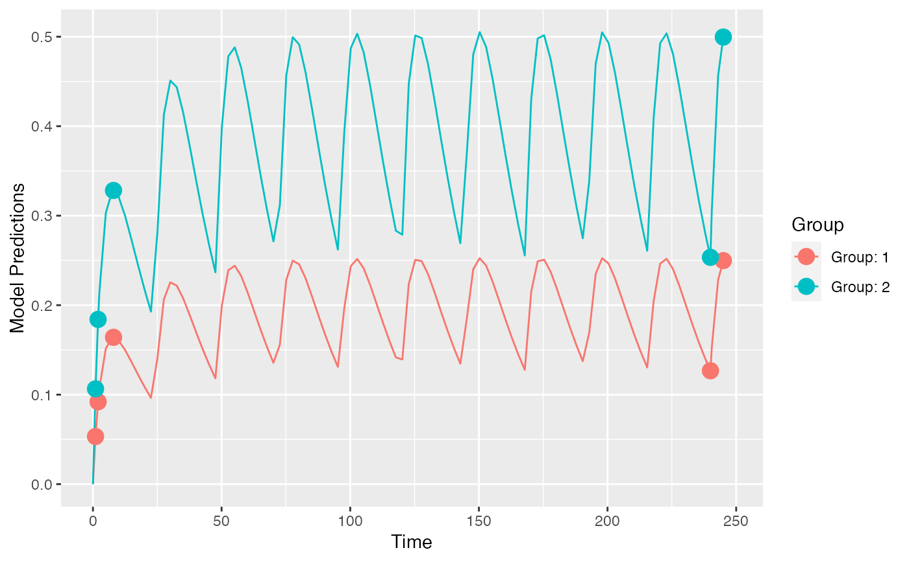

This is a residual unexplained variability (RUV) model function that encodes the model described above.
The function is suitable for input to the create.poped.database function using the
fError_file argument.
feps.add.prop(model_switch, xt, parameters, epsi, poped.db)
| model_switch | a vector of values, the same size as |
|---|---|
| xt | a vector of independent variable values (often time). |
| parameters | A named list of parameter values. |
| epsi | A matrix with the same number of rows as the |
| poped.db | a poped database. This can be used to extract information that may be needed in the model file. |
A list consisting of:
y the values of the model at the specified points.
poped.db A (potentially modified) poped database.
Other models: feps.add,
feps.prop,
ff.PK.1.comp.oral.md.CL,
ff.PK.1.comp.oral.md.KE,
ff.PK.1.comp.oral.sd.CL,
ff.PK.1.comp.oral.sd.KE,
ff.PKPD.1.comp.oral.md.CL.imax,
ff.PKPD.1.comp.sd.CL.emax
library(PopED) ## find the parameters that are needed to define in the structural model ff.PK.1.comp.oral.md.CL#> function (model_switch, xt, parameters, poped.db) #> { #> with(as.list(parameters), { #> y = xt #> N = floor(xt/TAU) + 1 #> y = (DOSE * Favail/V) * (KA/(KA - CL/V)) * (exp(-CL/V * #> (xt - (N - 1) * TAU)) * (1 - exp(-N * CL/V * TAU))/(1 - #> exp(-CL/V * TAU)) - exp(-KA * (xt - (N - 1) * TAU)) * #> (1 - exp(-N * KA * TAU))/(1 - exp(-KA * TAU))) #> return(list(y = y, poped.db = poped.db)) #> }) #> } #> <bytecode: 0x7fbd49aa46e8> #> <environment: namespace:PopED>## -- parameter definition function ## -- names match parameters in function ff sfg <- function(x,a,bpop,b,bocc){ parameters=c( V=bpop[1]*exp(b[1]), KA=bpop[2]*exp(b[2]), CL=bpop[3]*exp(b[3]), Favail=bpop[4], DOSE=a[1], TAU=a[2]) return( parameters ) } ## -- Define design and design space poped.db <- create.poped.database(ff_fun=ff.PK.1.comp.oral.md.CL, fg_fun=sfg, fError_fun=feps.add.prop, groupsize=20, m=2, sigma=c(0.04,5e-6), bpop=c(V=72.8,KA=0.25,CL=3.75,Favail=0.9), d=c(V=0.09,KA=0.09,CL=0.25^2), notfixed_bpop=c(1,1,1,0), notfixed_sigma=c(0,0), xt=c( 1,2,8,240,245), minxt=c(0,0,0,240,240), maxxt=c(10,10,10,248,248), a=cbind(c(20,40),c(24,24)), bUseGrouped_xt=1, maxa=c(200,24), mina=c(0,24)) ## create plot of model without variability plot_model_prediction(poped.db)#> [,1] [,2] [,3] [,4] [,5] [,6] #> [1,] 0.05336692 -8.683963 -0.05863412 0.000000 0.000000 0.000000 #> [2,] -8.68396266 2999.851007 -14.43058560 0.000000 0.000000 0.000000 #> [3,] -0.05863412 -14.430586 37.15243290 0.000000 0.000000 0.000000 #> [4,] 0.00000000 0.000000 0.00000000 999.953587 312.240246 3.202847 #> [5,] 0.00000000 0.000000 0.00000000 312.240246 439.412556 2.287838 #> [6,] 0.00000000 0.000000 0.00000000 3.202847 2.287838 3412.005199det(FIM)#> [1] 3.627987e+12#> V KA CL om_V om_KA om_CL #> 8.215338 10.090955 4.400304 39.833230 60.089601 27.391518